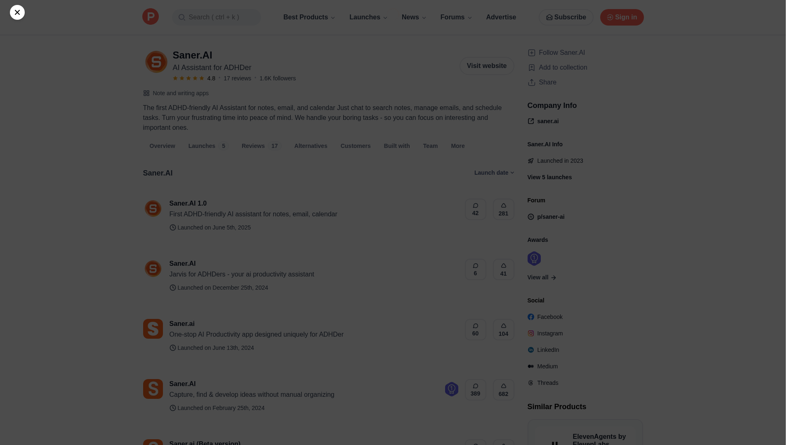
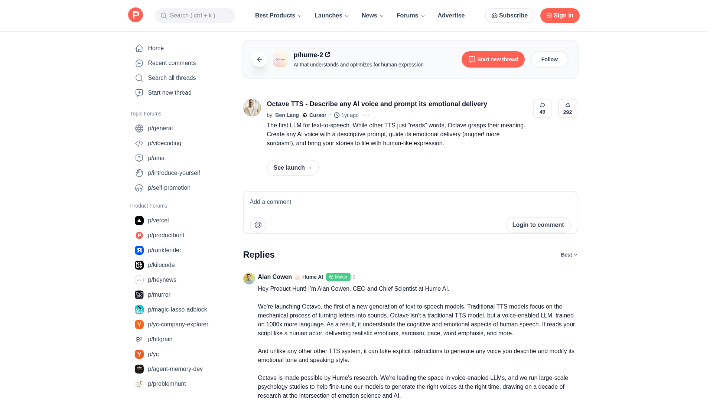
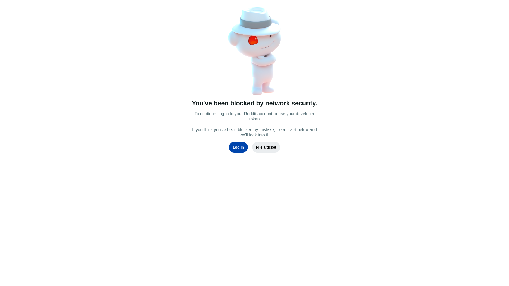
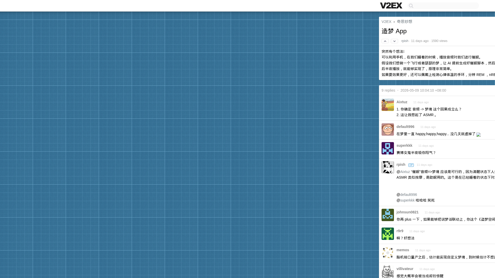

2026-05-20 周三
今日精选 · 5 个产品

Saner.AI — 首款 ADHD 友好的 AI 助手
首款专为 ADHD（注意力缺陷多动障碍）用户设计的 AI 助手，整合笔记、邮件和日历管理，帮助注意力障碍人群更好地管理数字生活。

Octave TTS — 用自然语言描述任何 AI 声音
Hume AI 推出的新一代文本转语音模型，支持用自然语言描述声音特征和情感表达，让 AI 语音合成真正理解情绪语境。

VidNotes — YouTube 视频一键转笔记
用 AI 将 YouTube 视频一键转化为结构化笔记。粘贴视频链接即可获得完整、有组织的学习笔记。

造梦 App — AI 驱动的梦境引导
利用 AI 生成催眠脚本，配合 TTS 转化为音频，在睡眠中播放以引导特定主题的梦境。

Aurora — 透明可解释的量化 AI
一款'玻璃盒'量化 AI，本地运行，每个结论都有数据引用，在定量数据上实现零幻觉。